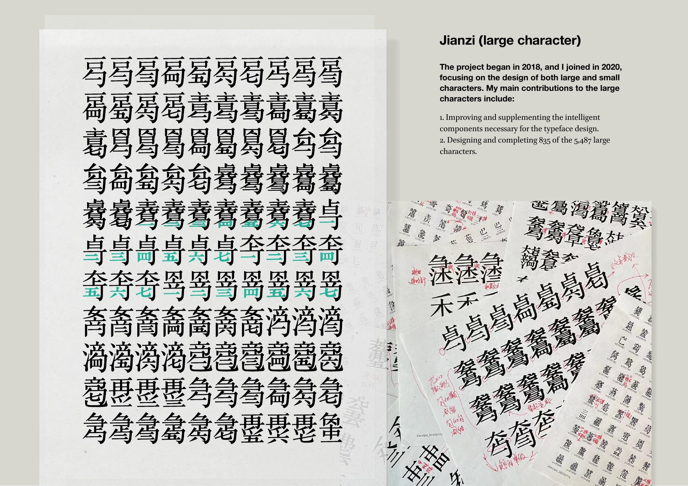
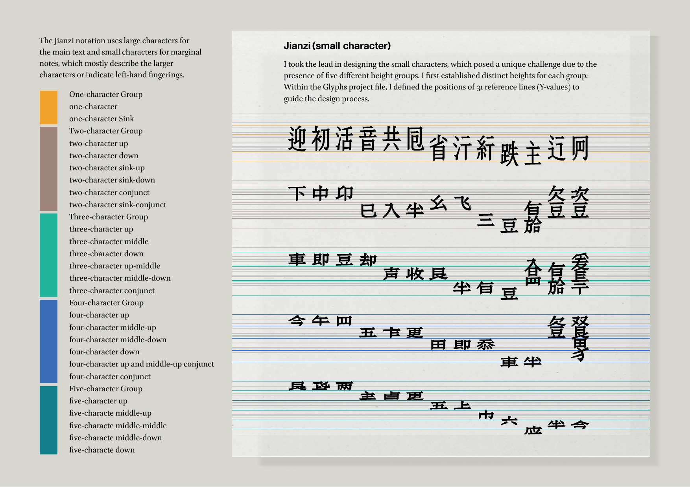
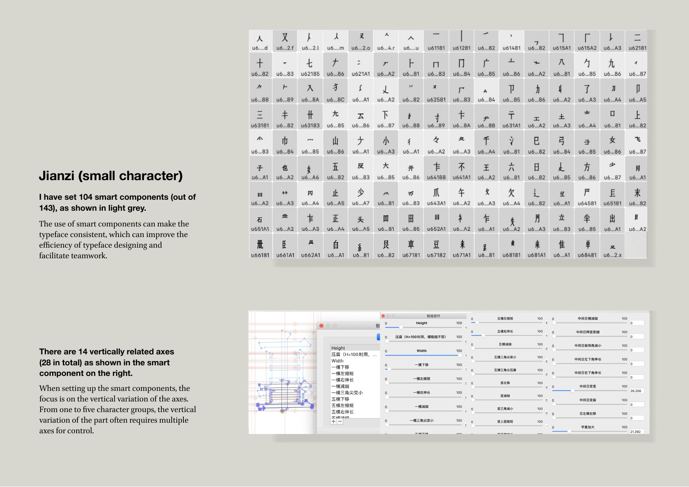

Traditional Chinese music notation · Digital font system
Guqin Notation
Computer digital font development for Guqin notation, translating historical notation forms into a contemporary digital type system.




Traditional Chinese music notation · Digital font system
Computer digital font development for Guqin notation, translating historical notation forms into a contemporary digital type system.


